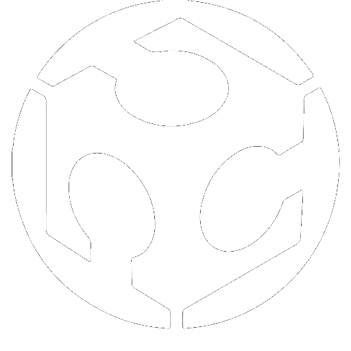
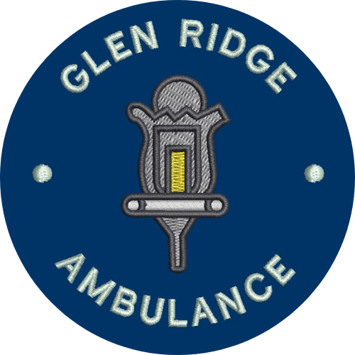

UVM FabLab
Operations Manager
Jan 2024 — Present
The UVM FabLab is the primary fabrication facility for UVM's College of Engineering and Mathematical Sciences.
In this role, I was placed in charge of all operations of the lab. This included managing student staff,
coordinating projects with professors and researchers, managing the lab budget, ensuring the lab was stocked,
ensuring safety within the lab, and defining lab policy to ensure high speed and quality. I was additionally
tasked with meeting sustainability requirements set by the university, and onboarding new staff.
While I was in this role, the FabLab's output increased by 33% per year. Additionally, new systems were
introduced to the lab, such as a filament recycling system and a fully automated Self-Serve printing station.
Lab Technician
March 2023 — December 2023
Prior to being promoted to operations Manager, I was one of the staff members tasked with creating tickets, setting up print jobs, running laser cuts, and completing post-processing on parts. I also acted as a forward-facing staff member, and worked with students to complete projects and answer questions. I completed frequent preventative or reparative maintenance on assigned machines.

Glen Ridge Volunteer Ambulance Squad
Emergency Medical Technician
March 2020 — June 2025
While not being direct engineering experience, I gained valuable skills in this role that are extremely relevant to the field of engineering. While working as an EMT, I delivered emergency medical services to over 300 patients in a wide variety of circumstances. Thing position allowed me to refine stress management and patient interaction skills, and learn how to communicate with a team effectively.